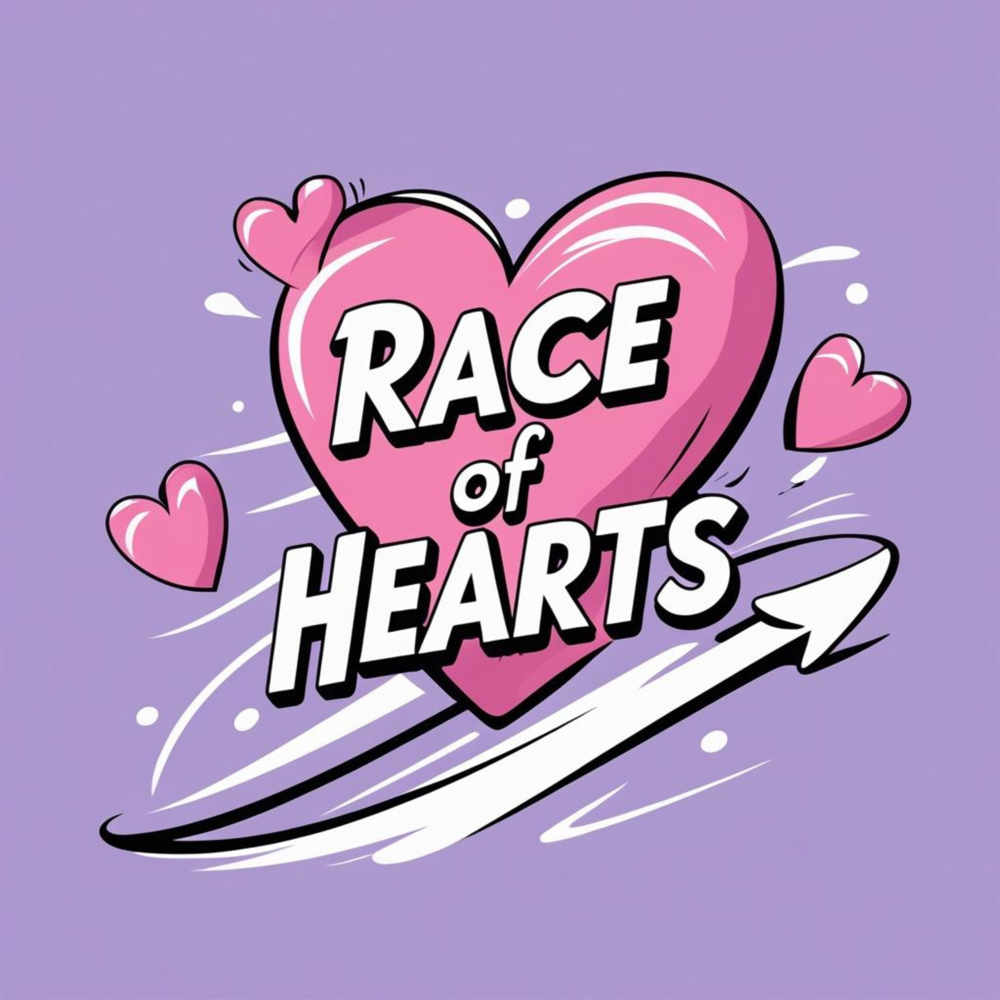
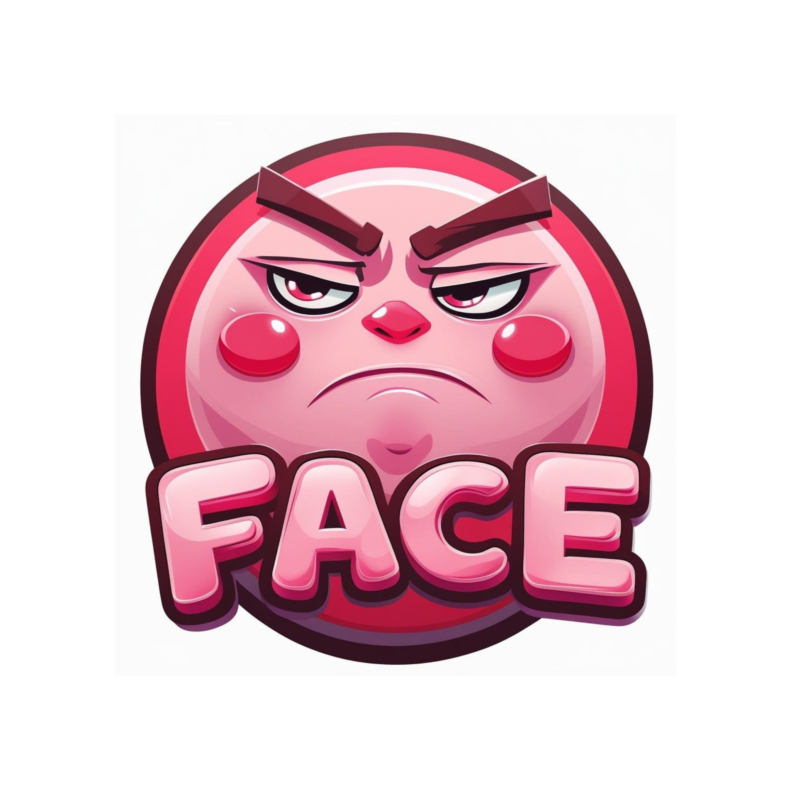

Meus projetos

Race Of Hearts: um jogo de corrida
Este é um jogo de corrida com cinco jogadores, inspirado em elementos que eu gosto, como cores vibrantes e corações. Foi criado para refletir minha personalidade e meu gosto por jogos divertidos e criativos.

Pink Face: um projeto inspirado na Mona Lisa
Pink Face é um projeto inspirado na Mona Lisa, que apresenta um rosto com olhos que acompanham o movimento do mouse na tela. Apesar da expressão irritada, foi uma experiência divertida de criar!